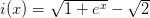
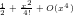
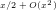
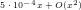
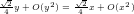

2.7 Mais exemplos de Cancelamento Catastrófico
Exemplo 2.7.1. Considere o seguinte processo iterativo:

 ,
,  ,
,  , ou seja, temos uma sequência
constante igual a
, ou seja, temos uma sequência
constante igual a  . No entanto, ao calcularmos no computador, usando o
sistema de numeração ’double’, a sequencia obtida não é constante e, de fato,
diverge. Faça o teste no Scilab, colocando:
. No entanto, ao calcularmos no computador, usando o
sistema de numeração ’double’, a sequencia obtida não é constante e, de fato,
diverge. Faça o teste no Scilab, colocando:
e itere algumas vezes a linha de comando:
Para compreender o que acontece, devemos levar em consideração que o
número  possui um representação infinita tanto na base decimal quanto
na base binária. Logo, sua representação de máquina incliu um erro de
arredondamento. Seja
possui um representação infinita tanto na base decimal quanto
na base binária. Logo, sua representação de máquina incliu um erro de
arredondamento. Seja  a diferença entre o valor exato de
a diferença entre o valor exato de  e sua
representação de máquina, isto é,
e sua
representação de máquina, isto é,  . A sequência efetivamente
calculada no computador é:
. A sequência efetivamente
calculada no computador é:

 |
Qual o número de condicionamento desse problema?
Exemplo 2.7.2. Observe a seguinte identidade

 ,
,  ,
,  ,
,
 ,
,  e
e  . Observe que quando
. Observe que quando  se aproxima
do
se aproxima
do  de máquina a expressão perde o significado. Veja a Figura 2.1 com o
gráfico de
de máquina a expressão perde o significado. Veja a Figura 2.1 com o
gráfico de  em escala logarítmica.
em escala logarítmica.


 em função de
em função de  em escala
linear-logarítmica variando de
em escala
linear-logarítmica variando de  até
até  . Veja o Exemplo 2.7.3.
. Veja o Exemplo 2.7.3.
Exemplo 2.7.3. Neste exemplo, estamos interessados em compreender mais detalhadamente o comportamento da expressão
 |
quando  é um número grande ao computá-la em sistemas de numeral de ponto
flutuante com acurácia finita. Um resultado bem conhecido do cálculo nos
diz que o limite de (2.7.3) quando
é um número grande ao computá-la em sistemas de numeral de ponto
flutuante com acurácia finita. Um resultado bem conhecido do cálculo nos
diz que o limite de (2.7.3) quando  tende a infinito é o número de
Euler:
tende a infinito é o número de
Euler:
 |
Sabemos também que a sequência produzida por (2.7.3) é crescente, isto é:

No entanto, quando calculamos essa expressão no Scilab, nos defrontamos com o seguinte resultado:
![|---|------------------|----|----|------------------|
| | | | | |
| | ( 1)n | | | ( 1)n |
| n | 1 + n | | n | 1 + n |
|---|-----------------------------------------------|
| |
| | | | 2 | |
| 1 |2,0000000000000 | |10 |2,7048138294215 |
| | | | 4 | |
| 2 |2,2500000000000 | |10 |2,7181459268249 |
| 3 |2,3703703703704 | |106 |2,7182804690957 |
| | | | | |
| 4 |2,4414062500000 | |108 |2,7182817983391 |
| | | | | |
| 5 |2,4883200000000 | |1010|2,7182820532348 |
| | | | | |
| 6 |2,5216263717421 | |1012|2,7185234960372 |
| | | | 14| |
| 7 |2,5464996970407 | |10 |2,7161100340870 |
| | | | 16| |
| 8 |2,5657845139503 | |10 |1,0000000000000 |
| 9 |2,5811747917132 | |1018|1,0000000000000 |
| | | | | |
|10 |2,5937424601000 | |1020|1,0000000000000 |
----------------------------------------------------](main621x.png) |
Podemos resumir esses dados no gráfico de  em função de
em função de  , veja
a Figura 2.2.
, veja
a Figura 2.2.
Observe que quando  se torna grande, da ordem de
se torna grande, da ordem de  , o gráfico da
função deixa de se crescente e apresenta oscilações. Observe também que a
expressão se torna identicamente igual a
, o gráfico da
função deixa de se crescente e apresenta oscilações. Observe também que a
expressão se torna identicamente igual a  depois de um certo limiar. Tais
fenômenos não são intrínsecos da função
depois de um certo limiar. Tais
fenômenos não são intrínsecos da função  , mas oriundas de
erros de arredondamento, isto é, são resultados numéricos espúrios. A
fim de pôr o comportamento numérico de tal expressão, apresentamos
abaixo o gráfico da mesma função, porém restrito à região entre
, mas oriundas de
erros de arredondamento, isto é, são resultados numéricos espúrios. A
fim de pôr o comportamento numérico de tal expressão, apresentamos
abaixo o gráfico da mesma função, porém restrito à região entre  e
e
 .
.
Para compreendermos melhor por que existe um limiar  que, quando
atingido torna a expressão do exemplo acima identicamente igual a
que, quando
atingido torna a expressão do exemplo acima identicamente igual a  ,
observamos a sequência de operações realizadas pelo computador:
,
observamos a sequência de operações realizadas pelo computador:
 | (2.1) |
Devido ao limite de precisão da representação de números em ponto flutuante,
existe um menor número representável que é maior do que 1. Este número é
 eps, onde eps é chamado de épsilon de máquina e é o menor número que
somado a 1 produz um resultado superior a 1 no sistema de numeração usado. O
épsilon de máquina no sistema de numeração double vale aproximadamente
eps, onde eps é chamado de épsilon de máquina e é o menor número que
somado a 1 produz um resultado superior a 1 no sistema de numeração usado. O
épsilon de máquina no sistema de numeração double vale aproximadamente
 . Em Python, o epsilon de máquina é a constante eps. Observe
que:
. Em Python, o epsilon de máquina é a constante eps. Observe
que:
ans =
1.0000000000000002220446
Quando somamos a  um número positivo inferior ao épsilon de máquina,
obtemos o número 1. Dessa forma, o resultado obtido pela operação de ponto
flutuante
um número positivo inferior ao épsilon de máquina,
obtemos o número 1. Dessa forma, o resultado obtido pela operação de ponto
flutuante  para
para  é 1.
é 1.
Portanto, quando realizamos a sequência de operações dada em (2.1), toda
informação contida no número  é perdida na soma com
é perdida na soma com  quando
quando  é
menor que o épsilon de máquina, o que ocorre quando
é
menor que o épsilon de máquina, o que ocorre quando  . Assim
. Assim
 é aproximado para
é aproximado para  e a última operação se resume a
e a última operação se resume a  , o que é
igual a
, o que é
igual a  mesmo quando
mesmo quando  é grande.
é grande.
Um erro comum é acreditar que o perda de significância se deve ao fato de
 ser muito pequeno para ser representado e é aproximando para
ser muito pequeno para ser representado e é aproximando para  . Isto é
falso, o sistema de ponto de flutuante permite representar números de magnitude
muito inferior ao épsilon de máquina. O problema surge da limitação no tamanho
da mantissa. Observe como a seguinte sequência de operações não perde
significância para números positivos x muito menores que o épsilon de
máquina:
. Isto é
falso, o sistema de ponto de flutuante permite representar números de magnitude
muito inferior ao épsilon de máquina. O problema surge da limitação no tamanho
da mantissa. Observe como a seguinte sequência de operações não perde
significância para números positivos x muito menores que o épsilon de
máquina:
 | (2.2) |
compare o desempenho numérico desta sequência de operações para valores
pequenos de  com o da seguinte sequência:
com o da seguinte sequência:
 | (2.3) |
Finalmente, notamos que quando tentamos calcular  para
para  grande,
existe perda de significância no cálculo de
grande,
existe perda de significância no cálculo de  . Para entendermos isso
melhor, vejamos o que acontece no Scilab quando
. Para entendermos isso
melhor, vejamos o que acontece no Scilab quando  :
:
n =
7.000000000000000000D+13
-->1/n
ans =
1.428571428571428435D-14
-->y=1+1/n
y =
1.000000000000014211D+00
Observe a perda de informação ao deslocar a mantissa de  . Para evidenciar o
fenômenos, observamos o que acontece quando tentamos recalcular
. Para evidenciar o
fenômenos, observamos o que acontece quando tentamos recalcular  subtraindo
subtraindo
 de
de  e invertendo o resultado:
e invertendo o resultado:
ans =
1.421085471520200372D-14
-->1/(y-1)
ans =
7.036874417766400000D+13
Para entendermos isso melhor, vejamos o que acontece no Scilab quando
 :
:
7.000000000000000e+13
>>> n=7e13; print("%1.20e" % n)
7.00000000000000000000e+13
>>> print("%1.20e" % (1/n))
1.42857142857142843451e-14
>>> y=1+1/n; print("%1.20e" % y)
1.00000000000001421085e+00
Observe a perda de informação ao deslocar a mantissa de  . Para evidenciar o
fenômenos, observamos o que acontece quando tentamos recalcular
. Para evidenciar o
fenômenos, observamos o que acontece quando tentamos recalcular  subtraindo
subtraindo
 de
de  e invertendo o resultado:
e invertendo o resultado:
1.42108547152020037174e-14
>>> print("%1.20e" % (1/(y-1)))
7.03687441776640000000e+13
Exemplo 2.7.4 (Analogia da balança). Observe a seguinte comparação
interessante que pode ser feita para ilustrar os sistemas de numeração
com ponto fixo e flutuante: o sistema de ponto fixo é como uma balança
cujas marcas estão igualmente espaçadas; o sistema de ponto flutuante é
como uma balança cuja distância entre as marcas é proporcional à massa
medida. Assim, podemos ter uma balança de ponto fixo cujas marcas estão
sempre distanciadas de  g (
g ( g,
g,  g,
g,  g, ...,
g, ...,  Kg,
Kg,  Kg,...)
e outra balança de ponto flutuante cujas marcas estão distanciadas sempre
de aproximadamente um décimo do valor lido (
Kg,...)
e outra balança de ponto flutuante cujas marcas estão distanciadas sempre
de aproximadamente um décimo do valor lido ( g,
g,  g,
g,  g,
g,  g,
...,
g,
...,  Kg,
Kg,  Kg,
Kg,  Kg, ...) A balança de ponto fixo apresenta uma
resolução baixa para pequenas medidas, porém uma resolução alta para
grandes medidas. A balança de ponto flutuante distribui a resolução de forma
proporcional ao longo da escala.
Kg, ...) A balança de ponto fixo apresenta uma
resolução baixa para pequenas medidas, porém uma resolução alta para
grandes medidas. A balança de ponto flutuante distribui a resolução de forma
proporcional ao longo da escala.
Seguindo nesta analogia, o fenômeno de perda de significância pode ser
interpretado como a seguir: imagine que você deseje obter o peso de um
gato (aproximadamente  Kg). Dois processos estão disponíveis: colocar o
gato diretamente na balança ou medir seu peso com o gato e, depois, sem
o gato. Na balança de ponto flutuante, a incerteza associada na medida do
peso do gato (sozinho) é aproximadamente
Kg). Dois processos estão disponíveis: colocar o
gato diretamente na balança ou medir seu peso com o gato e, depois, sem
o gato. Na balança de ponto flutuante, a incerteza associada na medida do
peso do gato (sozinho) é aproximadamente  de
de  Kg, isto é,
Kg, isto é,  g. Já
a incerteza associada à medida da uma pessoa (aproximadamente
g. Já
a incerteza associada à medida da uma pessoa (aproximadamente  Kg)
com o gato é de
Kg)
com o gato é de  do peso total, isto é, aproximadamente
do peso total, isto é, aproximadamente  Kg. Esta
incerteza é da mesma ordem de grandeza da medida a ser realizada, tornado
o processo impossível de ser realizado, já que teríamos uma incerteza da
ordem de
Kg. Esta
incerteza é da mesma ordem de grandeza da medida a ser realizada, tornado
o processo impossível de ser realizado, já que teríamos uma incerteza da
ordem de  Kg (devido à dupla medição) sobre uma grandeza de
Kg (devido à dupla medição) sobre uma grandeza de  Kg.
Kg.
Exercícios
E 2.7.1. Considere as expressões:
 |
e
 |
com  . Verifique que elas são idênticas como funções reais. Teste no
computador cada uma delas para
. Verifique que elas são idênticas como funções reais. Teste no
computador cada uma delas para  ,
,  e
e  . Qual
dessas expressões é mais adequada quando
. Qual
dessas expressões é mais adequada quando  é um número pequeno? Por
quê?
é um número pequeno? Por
quê?
Resposta. Quando  é pequeno,
é pequeno,  é um número grande. A primeira expressão produz um ”overflow” (número maior que
o máximo representável) quando
é um número grande. A primeira expressão produz um ”overflow” (número maior que
o máximo representável) quando  é pequeno. A segunda expressão, no entanto, reproduz o limite
é pequeno. A segunda expressão, no entanto, reproduz o limite  quando
quando  .
.
E 2.7.2. Encontre expressões alternativas para calcular o valor das seguintes
funções quando  é próximo de zero.
é próximo de zero.


-  Dica: Faça

Resposta. a) ; b) ; c) ; d) 
E 2.7.3. Use uma identidade trigonométrica adequada para mostrar que:
|
|
Analise o desempenho destas duas expressões no computador quando  vale
vale
 ,
,  ,
,  ,
,  ,
,  ,
,  e
e  . Discuta o resultado. Dica:
Para
. Discuta o resultado. Dica:
Para  ,
,  pode ser aproximada por
pode ser aproximada por  com erro de
truncamento inferior a
com erro de
truncamento inferior a  .
.
E 2.7.4 (title=Notas do prof. Guidi). Reescreva as expressões:

 utilizando a
aritmética de ponto flutuante ("Double") no computador.
utilizando a
aritmética de ponto flutuante ("Double") no computador.
E 2.7.5. Na teoria da relatividade restrita, a energia cinética de uma partícula e sua velocidade se relacionam pela seguinte fórmula:
 |
onde  é a energia cinética da partícula,
é a energia cinética da partícula,  é a massa de repouso,
é a massa de repouso,  o módulo
da velocidade e
o módulo
da velocidade e  a velocidade da luz no vácuo dada por
a velocidade da luz no vácuo dada por  .
Considere que a massa de repouso
.
Considere que a massa de repouso  do elétron seja
conhecida com erro relativo de
do elétron seja
conhecida com erro relativo de  . Qual é o valor da energia e o erro relativo
associado a essa grandeza quando
. Qual é o valor da energia e o erro relativo
associado a essa grandeza quando  ,
,  ,
,  e
e
 sendo que a incerteza relativa na medida da velocidade é
sendo que a incerteza relativa na medida da velocidade é
 ?
?
Resposta.  J;
J;  ;
;  J;
J;  ;
;  J;
J;  ;
;
 J;
J;  .
.
E 2.7.6. Deseja-se medir a concentração de dois diferentes oxidantes no ar. Três sensores eletroquímicos estão disponíveis para a medida e apresentam a seguintes respostas:
![v1 = 270[A] + 30[B ], v2 = 140[A] + 20[B ] e v3 = 15[A ] + 200[B ]](main745x.png)
 ,
,  e
e  são dadas em
são dadas em  e as concentrações em
e as concentrações em
 .
.
- Encontre uma expressão para os valores de
![[A]](main751x.png) e
e ![[B]](main752x.png) em termos de
em termos de
 e
e  e, depois, em termos de
e, depois, em termos de  e
e  . Dica: Se
. Dica: Se  , então
a matriz
, então
a matriz  dada por
dada por


- Sabendo que incerteza relativa associada às sensibilidades dos sensores
1 e 2 é de
 e que a incerteza relativa associada às sensibilidades do
sensor 3 é
e que a incerteza relativa associada às sensibilidades do
sensor 3 é  , verifique a incerteza associada à medida feita com o
par
, verifique a incerteza associada à medida feita com o
par  e o par
e o par  . Use
. Use ![[A] = [B] = 10milimol ∕l](main765x.png) . Dica: Você
deve diferenciar as grandezas
. Dica: Você
deve diferenciar as grandezas ![[A ]](main766x.png) e
e ![[B ]](main767x.png) em relação aos valores das
tensões.
em relação aos valores das
tensões.
Resposta. Em ambos casos, temos a seguinte estrutura:
Usando derivação logarítmica, temos
![1∂[A] S
[A]∂S11 = - S11S222-2 S12S21
-1∂[A] ----v2----- ----S21---- [A] ----S22----
[A]∂S12 = - S22v1- S12v2 +S11S22- S12S21 =-[B] ⋅S11S22- S12S21
-1∂[A] = ----S12-----
[A]1∂∂S[2A1] S11S22v- S12S21 S [A] S
[A]∂S22 = S22v11- S12v2 - S11S221-1 S12S21 =[B] ⋅S11S22-12- S12S21](main771x.png)
E o erro associado às medidas pode ser aproximado por
![1 | 1 ∂[A]| | 1 ∂[A]| |1 ∂[A]| |1 ∂[A]|
[A]δ[A] = ||[A]∂S11||δS11 +||[A]∂S12||δS12 + ||[A]∂S21||δS21 + ||[A]∂S22||δS22
1 [ [A] [A] ]
= |detS| S22δS11 +[B]S22δS12 +S12δS21 +[B]S12δS22](main773x.png)
onde não se indicou  nem
nem ![|[.]|](main776x.png) pois são todos positivos.
pois são todos positivos.
Fazemos agora a aplicação numérica:
Caso do par 1-2:
Caso do par 1-3:
![1 1
[A]δ[A] = 53550[200× 270×2% +200× 30×2%+ 30× 15× 10% +30×200×10% ]
= 1804,6≈0.0337=3.37%
1 525150
[B]δ[B] = 53550[15× 270× 2% +15×30× 2% +270×15×10%+270×200×10% ]
= -5895≈ 0.11=11%
53550](main780x.png)
Conclusão, apesar de o sensor  apresentar uma incerteza cinco vezes maior na sensibilidade, a escolha do sensor
apresentar uma incerteza cinco vezes maior na sensibilidade, a escolha do sensor  para
fazer par ao sensor
para
fazer par ao sensor  parece mais adequada.
parece mais adequada.
* As versões do livro disponíveis no site podem estar desatualizadas, veja a versão PDF atual no repositório GitHub oficial do projeto.
- IME - UFRGS